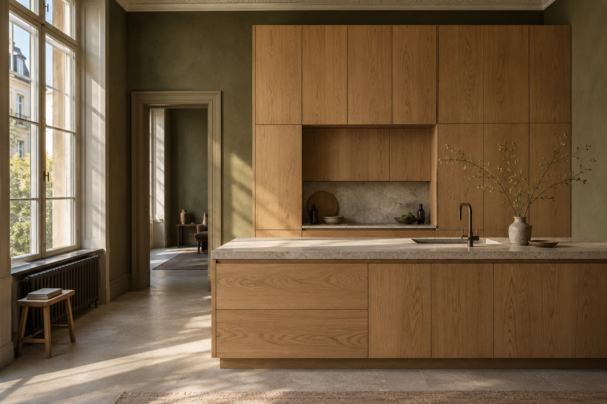
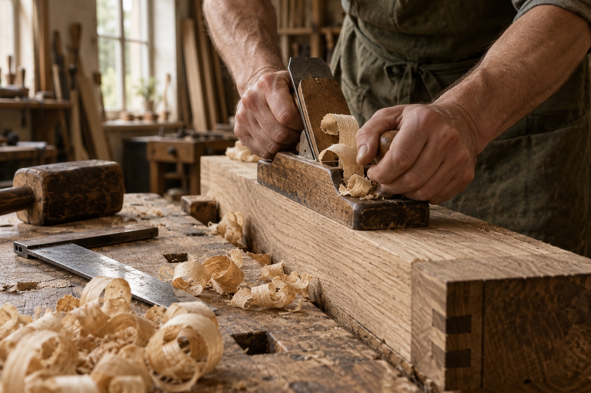

Kitchens
For busy mornings and slow dinners. Tailored layouts, tactile finishes and storage that quietly does its job.
Plan your kitchen ↗Good spaces start with good questions.
Bespoke kitchens, cabinetry and furniture. Thoughtfully designed.
Carefully made. Entirely yours.

What we make
For busy mornings and slow dinners. Tailored layouts, tactile finishes and storage that quietly does its job.
Plan your kitchen ↗From an awkward alcove to a whole wall. Built-in storage that belongs to the architecture of your home.
Make space ↗A table to gather around. A bench with a purpose. Individual pieces shaped by your everyday rituals.
Imagine a piece ↗A study in belonging
Illustrative projects from our fictional studio. Each begins with a room, a routine and a conversation.
Kitchen / Concept study
Warm oak meets cool limestone. Full-height cabinetry makes room for the everyday, while a generous island brings everyone together.
Oak · Limestone · Blackened brassStorage / Concept study
A wall of flush-front cupboards, balanced around the room's proportions. Carefully aligned grain lets the material speak.
Natural oak · Concealed fittingsFurniture / Design direction
An imagined solid-oak dining table with softly rounded edges and a generous footprint. Designed around the people who use it.
Solid oak · Hand-finished edges
The hand behind the detail
A clean joint. A carefully matched grain. An edge that feels right in the hand. We believe the smallest decisions make the biggest difference to how a space feels.
KERN is a fictional local studio concept, built around a simple idea: thoughtful design and honest craftsmanship belong together.
From first sketch to final fittingA clear path, together
Your space, your routines, your priorities. We start with the right questions.
Layouts, material samples and considered details bring the idea into focus.
Each component is shaped, joined and finished with care in the workshop.
The final details come together in your home. A considered fit, down to the last edge.
Every good project starts here
A room to rethink? A piece you can't quite find? Give your idea a little space.